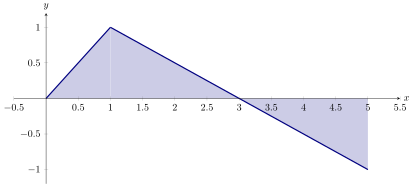
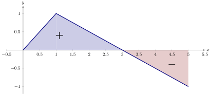
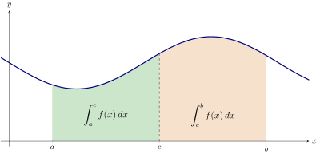
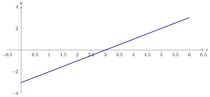
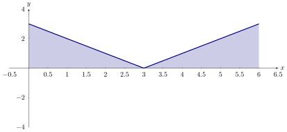
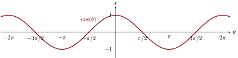
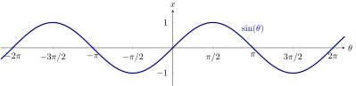
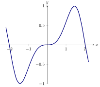
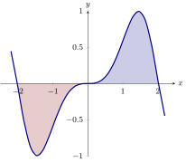

Definite integrals compute signed area.
Definite integrals, often simply called integrals, compute signed area.
The
definite integral computes the signed area between and the -axis on the
interval .
- If the region is above the -axis, then the area has positive sign.
- If the region is below the -axis, then the area has negative sign.
Note, when working with signed area, “positive” and “negative” area cancel each
other out.
Consider the following graph of :

Compute:
-
(a)
-
-
(b)
-
-
(c)
-
-
(d)
-
-
(e)
Use the formula for the area of a triangle.
Remember, we are dealing with “signed” area here:

Our previous question hopefully gives us enough insight that this next theorem is
unsurprising.
Properties of the definite integral Let and be defined on a closed interval that
contains the value , and let be a constant. The following hold:
-
(a)
-
-
(b)
-
-
(c)
-
-
(d)
-
-
(e)
We will address each property in turn:
-
(a)
- Here, there is no “area under the curve” when the region has no width;
hence this definite integral is .
-
(b)
- This states that total area is the sum of the areas of subregions. Here a picture
is worth a thousand words:

It is important to note that this still holds true even if . We discuss this in the
next point.
-
(c)
- For now, this property can be viewed a merely a convention to make other
properties work well. However, later we will see how this property has a
justification all its own.
-
(d)
- This states that when one scales a function by, for instance, , the area of the
enclosed region also is scaled by a factor of .
-
(e)
- This states that the integral of the sum is the sum of the integrals.
Due to the geometric nature of integration, geometric properties of functions can help
us compute integrals.
Compute:
This may seem difficult at first. Perhaps the first thing to do is look at a
graph of :

Now we can graph :

Now we see that we really have two triangles, each with base and height . Hence
A function is an
odd function if and a function is an
even function if
The names odd and even come from the fact that these properties are shared by
functions of the form where is either odd or even. For example, if , then and if ,
then Geometrically, even functions have horizontal symmetry. Cosine is an even
function:

On the other hand, odd functions have rotational symmetry around the origin. Sine
is an odd function: 
Let be an odd function defined for all real numbers. Compute:
Since our function
is odd, it must look something like:

The integral above computes the following (signed) area:

Let be an odd function defined for all real numbers. Which of the following are
equal to
Signed verses geometric area
We know that the signed area between a curve and the -axis on is given by On the
other hand, if we want to know the geometric area, meaning the “actual” area, we
compute
True or false:
Consider on the interval . Here
Integrals and Riemann sums
Exactly how does an integral compute area? It depends on who you ask. If you ask
Riemann, then you set and look at the following limit of Riemann sums: This says,
take a curve, slice it up into pieces on the interval , add up all the areas of rectangles
whose width is determined by the slices and the height is determined by a sample
point in one of these pieces.
Compute this limit:
This is a limit of Riemann sums! Specifically, it is a limit of
Riemann sums of rectangles, where and Hence, we may rewrite this as Now we see
that this computes the area between the -axis and the curve . Let’s see it:
By geometry, we know that this semicircle has area . Hence